In China Employee Termination in 2026: A Position Paper for Foreign Boards on Legal Defensibility, Payroll Risk, and Decision Discipline
Key takeaways
- China termination risk should be treated as a governance issue led by legal-route validity, not as a speed-led HR execution issue.
- For foreign employers, the largest cost shocks often come from route misclassification and weak evidence, not from planned severance itself.
- Board-level policy should force legal-first decision sequencing and block downstream actions when route certainty is unresolved.
- Payroll quality is necessary but insufficient: coding, communication, and legal rationale must align as one coherent record.
- A defensibility-first model usually improves both compliance outcomes and long-run operating efficiency.
Executive thesis
This paper takes a clear position: foreign employers operating in China should adopt a legal-defensibility-first termination governance model, even when business pressure favors speed. The reason is practical rather than theoretical. In China, termination outcomes are shaped by legal-route selection and evidence integrity before they are shaped by operational smoothness. When organizations reverse that order, they often convert manageable employment decisions into higher-cost disputes.
For boards and regional leadership teams, this is not only a compliance point. It is a capital-allocation and risk-governance issue. If terminations are handled through inconsistent route logic, fragmented records, or misaligned payroll labeling, the organization can face repeat disputes, management distraction, and avoidable financial volatility. A disciplined framework therefore belongs at board-policy level, not only in local HR manuals.
Legal and regulatory baseline (plain-language for non-local readers)
Foreign decision-makers often ask whether China termination rules are “strict” compared with at-will markets. A better framing is structural: China uses a legal-route model, where employer action should correspond to recognized pathways and supportable facts. This does not make exits impossible. It means exits should be reasoned and documented in a way that can withstand review if challenged.
The core legal baseline comes from the Labor Contract Law, which sets primary rules around termination pathways and consequences. The State Council implementation regulation adds operational interpretation important for practical application. Supreme People’s Court labor dispute interpretation provides an adjudication-facing lens that highlights why evidence and consistency matter so much. The Social Insurance Law adds statutory obligations linked to offboarding and contribution closure. For foreign operators, China Briefing is useful as a practical translation layer, but policy should still be anchored in the official hierarchy.
In simple terms: before asking “How fast can we process this exit?”, boards should require teams to answer “Which legal route applies, what evidence supports it, and where uncertainty remains?”
Strategic position: defensibility should outrank speed in policy design
Many global organizations unintentionally incentivize speed through monthly targets, restructuring deadlines, or centralized budget pressure. In China termination cases, that incentive design can backfire. Speed is not neutral if legal-route certainty is weak. A fast but weakly grounded case can trigger disputes that consume more time and cost than a disciplined case would have required upfront.
This paper argues for a board-level policy hierarchy:
- Legal-route validity and evidence sufficiency;
- Communication and payroll consistency;
- Execution speed.
This hierarchy does not mean slow decisions. It means conditional speed: rapid execution is appropriate when legal basis is clear and records are coherent. Where ambiguity persists, policy should require escalation or route adjustment before irreversible actions are taken.
Risk thesis by decision type
Type 1: Manager-initiated exits under performance pressure
These cases are high frequency and deceptively risky. Business managers often view them as straightforward, yet record quality may be uneven. Without disciplined route validation, organizations can misjudge exposure.
Type 2: Multi-role restructuring programs
These cases amplify governance risk because case volume can overwhelm review capacity. Uniform global directives may also obscure local legal differences. If governance gates are weak, inconsistency spreads quickly.
Type 3: Contract-cycle and non-renewal-related exits
These are often treated as administrative closures, but legal and payment consequences can still vary by facts and route assumptions. Over-automation can hide classification errors.
Type 4: Vendor/EOR-supported exits
Outsourcing can improve process execution, but it does not eliminate core legal exposure. Risk persists when accountability boundaries are unclear or fragmented.
Across all four types, the repeated pattern is clear: weak route governance creates downstream payroll and communication inconsistencies that are difficult to defend later.
Policy stance: five controls boards should mandate
1) Route-classification gate before execution begins
No employee-facing communication or final payroll mapping should proceed until legal route classification is approved and recorded.
2) Evidence sufficiency threshold with explicit blockers
Policy should define mandatory evidence categories and require case pause when critical items are missing or contradictory.
3) Communication-payroll-legal alignment check
Before release, organizations should run a blocking consistency check across legal rationale, employee-facing wording, and payment labeling.
4) Escalation trigger for local-practice uncertainty
Where city-level ambiguity exists, policy should require documented local confirmation rather than assumption-based execution.
5) Archive accountability and retrieval readiness
Each case should have one accountable owner for evidence indexing and retention, including vendor artifacts where relevant.
These controls are simple but powerful because they target the points where real failures usually occur.
Board case contrast A: fast execution model vs defensibility-first model
In a speed-led model, regional leaders prioritize timeline closure. HR drafts communication quickly, payroll prepares coding early, and legal review is compressed. The case closes quickly on paper but may carry unresolved legal-route questions and fragmented records.
In a defensibility-first model, the same case begins with route classification and evidence testing. If unresolved items appear, teams escalate before employee-facing release. Payroll maps components only after route confirmation. Closure may be slightly later, but the organization exits with coherent records and lower dispute probability.
From a board perspective, the second model tends to produce more predictable cost outcomes and lower operational disruption over time.
Board case contrast B: regional restructuring under budget pressure
Under budget pressure, headquarters may request one payout framework and accelerated implementation. In a weak-governance model, local teams may force diverse cases into one process track, increasing inconsistency risk.
A defensibility-first board policy allows speed where route confidence is high, while requiring enhanced review for ambiguous cases. This creates a portfolio approach: not all cases receive the same process intensity, but all cases meet baseline legal and documentation gates. The result is better risk pricing and fewer avoidable escalations.
Secondary operations layer: practical SOP (kept subordinate to legal context)
Legal function
- Validate route fit and define unresolved legal points.
- Approve advancement only when evidence threshold is met.
- Flag mandatory local-confirmation items.
HR function
- Build case chronology and coordinate gate completion.
- Maintain version-controlled communication records.
- Ensure archive completeness at closure.
Manager function
- Provide factual records and avoid premature legal conclusions.
- Follow approved communication boundaries.
- Escalate factual conflicts early.
Payroll function
- Delay final mapping until route approval is complete.
- Align labels and calculations with legal rationale.
- Record exception handling decisions and approvals.
Vendor/EOR function
- Execute defined tasks with traceable handoffs.
- Preserve records and transfer archive artifacts per contract.
- Escalate ownership ambiguity before release.
This SOP is intentionally concise. It supports the thesis that operations should implement legal clarity, not substitute for it.
Document checklist for defensibility and payroll coherence
A minimum board-approved checklist should include:
- Route-classification memo with approval record;
- Employment contract documents and relevant amendments;
- Factual chronology with source references;
- Manager records tied to asserted facts;
- Legal review notes and escalation outcomes;
- Employee communication drafts and final texts;
- Payroll component rationale and coding outputs;
- Statutory closure notes (including contribution handling);
- Vendor/EOR handoff logs where used;
- Final archive index with accountable owner.
When this file set is complete, teams can explain decisions coherently to auditors, internal governance committees, or dispute forums.
Exception handling principles for board policy
Missing mandatory evidence
Require stop/go pause, not workaround messaging. Options are: recover evidence, revise route, or adopt controlled negotiated closure.
Contradictory narrative across teams
Freeze outbound communication until legal, HR, and payroll artifacts are aligned under approved language.
Payroll-output mismatch
Hold payment release when labels or categories conflict with route rationale. Correct and document before finalization.
Local ambiguity unresolved
Mandate local professional confirmation and explicit risk acknowledgment if timing pressure remains.
Vendor ownership conflict
Suspend handoff until responsibility map is documented and acknowledged by all parties.
These principles convert exception handling from improvisation into governed decision-making.
Systems and audit trail expectations
Boards should not wait for full system replacement to improve control. High-impact improvements can be implemented through policy and lightweight configuration.
First, make route classification a controlled, approval-bound field. Second, tie communication templates and payroll categories to that route to reduce contradiction risk. Third, require pre-release validation that compares route, wording, and payroll labels. Fourth, maintain version logs showing who changed what and why. Fifth, define retention and retrieval ownership for all files, including external vendor artifacts.
The strategic benefit is transparency. When cases are reviewed later, the organization can show a clear chain of reasoning rather than reconstructing decisions from fragmented correspondence.
Common governance failures and corrective actions
Failure 1: treating legal review as final sign-off only
Correction: move legal-route validation to entry gate.
Failure 2: over-standardizing global templates
Correction: keep global architecture but preserve local escalation triggers.
Failure 3: measuring teams only on closure speed
Correction: add defensibility and consistency metrics to performance dashboards.
Failure 4: separating payroll from legal governance
Correction: include payroll in mandatory pre-release alignment checks.
Failure 5: diffuse accountability in outsourced models
Correction: require one internal accountable owner across the full case lifecycle.
Board action agenda (next phase without timeline-template framing)
- Adopt a formal policy statement that legal-route validity is the first termination gate in China.
- Approve a standardized route-and-evidence decision form for all China exits.
- Mandate a three-way consistency gate (legal, HR communication, payroll coding) before release.
- Require escalation documentation for unresolved local-practice issues.
- Establish archive ownership and retrieval standards across internal teams and vendors.
- Add post-case review to capture lessons and adjust policy quarterly.
- Report defensibility metrics to regional governance committees, not just closure volumes.
- Align manager training so business leaders understand why legal-first sequencing supports better outcomes.
This agenda keeps the organization practical and decision-oriented while reducing preventable legal and payroll risk.
What to watch next
Foreign employers should monitor developments in three areas. First, practical dispute-handling trends may continue to evolve, especially around evidence weighting by locale. Second, economic cycles can increase restructuring pressure, testing whether governance controls hold under stress. Third, multinational policy harmonization efforts may unintentionally dilute local legal signals; boards should regularly test whether global templates still reflect China-specific requirements.
A durable posture is to maintain one clear policy thesis, reinforce it with case-level controls, and update interpretation notes as practice evolves.
Source-fit reassessment for this run
This run intentionally rotated from a role-relay article into a board-facing position paper while retaining the same high-confidence legal source stack. That decision improves variation without sacrificing factual reliability. Official law, implementation regulation, and judicial interpretation remain the foundation; China Briefing remains the practical foreign-reader bridge. We did not prioritize tax-dominant or broad comparative commentary because they are lower fit for this governance-thesis format.
FAQ
1) Why frame termination as a board issue rather than only HR policy?
Because legal-route failures and evidence inconsistency create enterprise-level cost volatility and governance risk.
2) Can a defensibility-first model still support business agility?
Yes. It supports conditional speed: fast execution when route certainty is high, controlled escalation when it is not.
3) Does EOR usage reduce the need for internal governance?
No. EOR can help execution, but principal risk management still requires internal policy discipline.
4) Is payroll mainly a downstream administrative function here?
No. Payroll is a key control point for legal-consistency integrity in final output artifacts.
5) Should one global policy apply uniformly to every China city?
Use one policy architecture, but maintain local confirmation triggers for uncertain or high-impact cases.
6) Is this paper legal advice for specific disputes?
No. It is informational and governance-oriented; specific cases require qualified local professional advice.
Disclaimer
This article is for informational purposes only and does not constitute legal, tax, accounting, or compliance advice. China employment outcomes depend on specific facts and local implementation practice. Employers should seek qualified local professional advice before making case-level decisions.
Sources
- National People’s Congress. Labor Contract Law of the People’s Republic of China (official English text; adopted 2007-06-29, amended 2012-12-28). http://www.npc.gov.cn/zgrdw/englishnpc/Law/2007-12/13/content_1384064.htm (accessed 2026-02-27).
- State Council. Regulations for the Implementation of the Labor Contract Law of the PRC (State Council Decree No. 535; official publication). https://www.gov.cn/gongbao/content/2008/content_1124615.htm (accessed 2026-02-27).
- Supreme People’s Court. Interpretation on Issues Concerning the Application of Law in the Trial of Labor Dispute Cases (I) (2020 amendment). https://www.court.gov.cn/fabu/xiangqing/243981.html (accessed 2026-02-27).
- National People’s Congress. Social Insurance Law of the People’s Republic of China (official English text; adopted 2010-10-28). http://www.npc.gov.cn/zgrdw/englishnpc/Law/2009-02/20/content_1471106.htm (accessed 2026-02-27).
- Dezan Shira & Associates (China Briefing). Employee Termination in China: A Guide for Employers (updated 2025). https://www.china-briefing.com/news/employee-termination-in-china/ (accessed 2026-02-27).
China-Payroll.com provides compliance-first EOR and payroll support for foreign employers operating in China.
Need local employment support in China?
If you need a compliance-first partner for hiring, payroll, and risk controls in China, China-Payroll.com can help evaluate the right setup.
Image Prompt Pack
Create a 16:9 hero image for article title: 'In China Employee Termination in 2026: A Position Paper for Foreign Boards on Legal Defensibility, Payroll Risk, and Decision Discipline'. Scene: global operations team evaluating workforce model options for China m…